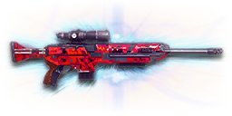

← Back to the Bighorn .50M comparison
Sage Guide · Terran Republic · Infiltrator
The Master Sniper Rifles directive reward — the hardest-hitting bolt-action in the game: one headshot kills at every range, two body shots kill at every range, and 680 m/s bullets. This page teaches you to use a rifle that forgives nothing but the aim.
The one-line verdict: the only sniper rifle that one-shot headshots at every range: 750 damage, 500 at the floor, 680 m/s, straight-pull bolt built in, and a compensator built in. You pay for it with the slowest rechamber in the game — 1.82 s — the widest hipfire, and the loudest minimap signature of any sniper rifle.

The Bighorn .50M · Terran Republic · 5-round magazine · Master Sniper Rifles directive
Every enemy infantry has 1,000 health (500 shield + 500 health). Your bullet does 750 damage up close, fading to 500 at 325 m. Headshots count ×2.1, leg shots count less (×0.9). That gives you three numbers worth memorising: a headshot kills at every range; two body shots kill out to every range; and against a shielded Heavy (1,450 health) one headshot kills to ~85 m, two beyond it.
| Range | Damage | Head | Chest | Legs | Chest vs Nanoweave | Chest vs shielded Heavy | Head vs shielded Heavy |
|---|---|---|---|---|---|---|---|
| Close · 0–10 m | 750 | 1 | 2 | 2 | 2 | 2 | 1 |
| Mid · 10–168 m | 750→625 | 1 | 2 | 2 | 2 → 3 | 2 → 3 | 1 → 2 |
| Far · 168–325 m | 625→500 | 1 | 2 | 2 → 3 | 3 | 3 | 2 |
| At the floor · 325–400 m | 500 | 1 | 2 | 3 | 3 | 3 | 2 |
Perfect-accuracy times to kill: one headshot is instant inside All ranges; two body shots take 1.82 s — the time to work the bolt and fire again. A third body shot, when the range demands it, takes 3.64 s. Magazine: 5 rounds, with 55 in reserve.
Full power to 10 m, then a steady slide to minimum at 325 m. The gold dashed line is the 476 = one-shot headshot line.
Nanoweave armour: since the Arsenal Update, sniper rifles use their own resistance type — Nanoweave cuts body and leg damage by 20% and does nothing to headshots. Your one-shot headshot range is untouched. Body shots are what suffer: two body shots only work out to 167.5 m against a full-Nanoweave target (instead of every range), and three body shots take 3.64 s. Aim for the head and Nanoweave stops mattering.
One rifle, four fighting styles. The right technique changes with distance — use the range finder below to see what your bullets do at any range, then learn the four bands underneath it. Your bullet drops as it flies (gravity 7.5 m/s², a third less than most rifles) and takes time to arrive — at 200 m it drops 0.32 m and takes 0.29 s to get there. Lead moving targets and aim above the head at long range.
How to fight here
Aim: the head if scoped, the chest if hipfiring. Keep moving.
At arm's length your scope is a liability: the sight takes 0.30 s to come up and the target is already on you. Hipfire a body shot if you must — one 750-damage body shot plus a knife ends most fights — but the honest answer at this range is your sidearm. A 1.82 s rechamber is an eternity in a room fight.
Aim: the head. One shot, one kill.
Your whole job lives here: feet planted, 6x scope up, breath held, crosshair on the head. One hit ends the fight — and two body shots kill even through Nanoweave out to 168 m. Your 680 m/s bullet drops only 0.32 m at 200 m. Don't rush — a miss costs you 1.82 s of rechamber.
Aim: the head. One shot, one kill.
The headshot still kills in one — it always does, at every range. Only the body shots change: past 168 m a Nanoweave wearer needs three of them. Aim for the head and nothing about this band is different from the last.
Aim: the head. One shot, one kill.
Damage is flat at 500 now — still one headshot, still two body shots, at every range in the game. Only the drop grows (0.73 m at 300 m, 1.30 m at 400 m) and the flight time (0.44 s to 300 m). Take these shots only at stationary targets — a moving head at 400 m is a lottery ticket, even with this rifle.
Your accuracy is decided by two things before skill even enters it: what your body is doing (your stance sets the starting cone of fire) and what your finger is doing (one shot, then the bolt). The Bighorn .50M has no fire-mode switch — bolt-action only — so "firing modes" are something you do with your hands, not a setting on the gun. 6x–12x scopes sway — the crosshair drifts on its own, and higher magnification magnifies the sway. Hold your breath (Shift, default) to almost completely stop it; the Target Focus implant makes the breath last longer.
| Stance | Starting cone | What it means for you |
|---|---|---|
| Sprinting | 7.0° | Maxed out — the widest the cone can be. This is the sprinting disaster: never start firing from a sprint. |
| Hipfire, moving | 6.75° | Walking or strafing from the hip. The 0.94 m ring at 8 m in section 04 is this stance drawn out. |
| Hipfire, standing | 6.0° | Your point-blank default. The 0.84 m ring at 8 m in section 04 is this stance drawn out. |
| Hipfire, crouched | 5.5° | The tightest hipfire you have. Crouch when holding a doorway from the hip. |
| Aimed (ADS), feet planted | 0.0° | Standing or crouched makes no difference here — a dot, not a cone. This is why the stop–aim–fire order matters. |
| Aimed (ADS), strafing | 0.55° | More than ten times the planted cone, and you move at half speed (0.5×). Strafe between shots to stay hard to hit; plant your feet during each shot. |
| Mode | How your finger does it | Use it at |
|---|---|---|
| One aimed shot | Press the trigger once, from a planted stance | Every kill inside every range. This is the whole rifle. |
| Rechamber, re-acquire | Work the bolt (1.65 s), find the target again, fire | Every second shot. With the Straight-Pull Bolt you can stay scoped while rechambering; without it you leave ADS to work the bolt and cannot re-scope until it is done. |
| The rushed second shot | Fire the instant the bolt closes, without re-aiming | Nowhere. The bolt is home but your crosshair is still where the recoil left it. Wait the extra beat — the trainer below will show you what rushing costs. |
A target 100 m away, aiming down sights. Click TAKE THE SHOT to fire one round. The bolt takes 1.82 s to cycle — the bar shows it — and a shot fired before the bolt is home is a rushed shot. A shot fired the instant the bolt closes, before you re-aim, is impatient. Aim for clean shots: wait for the bolt, take the extra beat to re-aim, then fire. The sniper analogue of the automatic rifles' burst window is shot discipline, not burst size. (A note on what changed: the burst simulator from the automatic-rifle guides does not fit a bolt-action — there is no burst to grade. This trainer grades your rechamber rhythm instead.)
Bolt cycle — fills as the bolt works, empties when you can re-aim and fire.
Your shots will be graded here — clean beats rushed, every time.
Some things are easier to show than to say. Here's what your bullets actually do: how wide hipfire spreads at 8 metres, what a good shot rhythm looks like, and what the 6x and 12x sights really change. The hands-on version — taking the shot yourself — is the practice window in section 03.
A full-size target 8 m away — an arm's-length room fight. The rings show where hipfire rounds land around your aim point (the chest). Sizes are drawn to scale from the gun's real cone-of-fire numbers.
Read it this way: standing still, the 0.84 m ring is wider than a man's chest — a third of your hipfire rounds miss a target this size even when you aim dead centre, which is why sniper hipfire is a last resort, not a tactic. Move and it grows to 0.94 m — past ~10 m that's rounds missing entirely: the exact moment to switch to aiming down sights, where the spread shrinks to a dot. (Ring sizes use the real geometry: spread diameter = 2 × distance × tan(cone ÷ 2).)
One shot, then the bolt. The same shot, two very different outcomes:
The target pattern is one aimed shot, then a full rechamber — 1.82 s on this rifle before the next round is ready. The rechamber is not dead time: with the Straight-Pull Bolt you stay scoped and re-acquire while the bolt works; without it you leave ADS, work the bolt, and re-scope. Either way, the shot after the rechamber is a new shot — re-aim it from zero, don't fire from where the recoil left you.
The target at 150 m is small but the view is wide open — you see the crate, the tower, and the next enemy coming. Fast to aim, nothing blocks your edges.
Same target, same 150 m — but he looks much taller, so placing shots on his head gets much easier. The price: your view narrows to the round window, the crate and tower are gone, and close targets feel fast and huge.
That's the whole 30-cert decision from section 05 in one picture: 6x for the working range, 12x for the far edge. The 12x shows you the head at 150 m — and magnifies your sway and recoil with it, so hold your breath.
Honest news first: the rifle arrives with a 6x scope and nothing else — no rail, no barrel, no ammo. Nothing here is free except the 6x, so buy in the order shown and stop whenever the gun feels right. Everything below is an optional sidegrade, not an upgrade.
A 6x scope, built into the rifle. Your working sight — see section 04 for what it shows at 150 m.
Good: your default; good to ~250 m, and the only scope you need while learning.
Bad: past 250 m the head is small — that's the 8x/10x/12x's job.
More magnification, same sway. The 8x is the sweet spot for a ~246 m one-shot range; the 10x and 12x are for the far edge. All four cost the same — pick by range, not by price.
Good: picking out heads past 200 m; the 12x makes a 300 m head look like a 25 m one.
Bad: close targets feel fast and huge; sway and recoil magnify with the zoom, so hold your breath.
Built into the rifle: it cuts vertical recoil, but it raises your hipfire cone (+0.5° standing, +0.25° moving — that is why this rifle's hipfire is the widest of any sniper rifle) and adds 50 m to your minimap detect range. You appear on enemy minimaps from 150 m away when you fire.
Good: nothing to buy — it is part of the rifle, and the recoil help is real.
Bad: stealth: 150 m is the loudest minimap signature of any sniper rifle in the game.
Hides your muzzle flash so your own view stays clear at night — but you appear on enemy minimaps from 15 m farther away. With the built-in compensator, that is 165 m when firing.
Good: night fights where your own flash blinds you. A comfort pick, nothing more.
Bad: as an early purchase — it changes no fight outcome, and it makes you louder on the map.
No Suppressor: the Bighorn cannot fit one — the built-in compensator takes the barrel slot. If you want to shoot quietly, this is the wrong rifle.
Built into the rifle: you chamber the next round while staying aimed down sights. One of the reasons this rifle feels so much faster than its 1.82 s rechamber sounds.
Good: every second shot — and it is free.
Bad: nothing.
Swapping to the rifle is 30% faster and horizontal recoil drops 20%, but vertical recoil rises 20%. On a sniper rifle the recoil barely matters — the swap speed is what you're buying.
Good: quick-scoping and weapon swaps; getting the rifle up fast after a spot.
Bad: if you never swap weapons mid-fight, it does nothing for you.
Removes the weapon's aim-down-sights moving accuracy penalty — your strafing cone becomes your planted cone — but you move 33% slower while aiming.
Good: holding a lane and strafing while scoped, where the tighter cone matters more than the speed.
Bad: aggressive play — a third slower while scoped makes you an easier target.
Adds 1 round to the magazine (5 → 6) — a 20% longer string before the 3.86 s reload — but the weapon takes longer to equip and unequip.
Good: holding a lane: six rounds is three kills without a reload.
Bad: room-clearing, where the slower swap gets you killed.
A torch whose beam reveals cloaked infiltrators. Toggle it with the attachment key (X by default).
Good: hunting a stalker infiltrator camping your capture point — sweep corners with it.
Bad: as your everyday rail — it gives zero accuracy help, and the beam advertises your position.
This rifle has no ammo attachments — no Soft Point, no High Velocity. Its damage curve is what it is, and the numbers in section 01 are the whole story.
0 certs in attachments · The directive reward
What the directive buys you before a single attachment: the hardest-hitting rifle in the game, already complete. Genuinely usable — learn the rifle on this before spending anything.
230 certs in attachments · Recommended
The best value in this whole guide. An 8x scope, six rounds instead of five, and a fast swap — the complete rifle.
130 certs in attachments · Night
Built to shoot at night without your own flash blinding you. You are still the loudest rifle on the minimap — 165 m — so pick a spot nobody is watching.
230 certs in attachments · Extreme range
12x magnification for the far edge of every range in the game, six rounds, and the tightest strafing cone you can buy. Weak up close — fight from cover, at range.
A sniper rifle is a planted weapon. Find a ridge, a rooftop, or a rock with cover at your back and an escape route behind it — then stop moving. The player who picks the range usually wins the duel; a sniper picks it before the enemy even spawns.
Headshots deal ×2.1 damage: one kills inside every range, versus two body shots. Don't aim at the head directly — aim at the top of the head and let the sway drift through it. One clean headshot is the whole rifle; everything else is a backup plan.
Every shot costs you 1.82 s before the next one is ready. Use that time: with the Straight-Pull Bolt you stay scoped and watch the target while the bolt works; without it you leave ADS, work the bolt, and re-scope. Never fire the instant the bolt closes — re-aim first, or the second shot is a gift to the enemy.
With a 6x scope or higher, hold Shift once the sight is up: it almost completely stops the scope sway. But the breath runs out, and the Target Focus implant is what extends it. At close range with a 1x–4x scope there is no sway at all — don't waste the breath you don't need.
Reloading with even 1 bullet left takes 3.86 s; an empty rifle takes 5.0 s — an eternity mid-fight. Count roughly: after two kills, duck behind cover and reload early. Treat the last round as your emergency reserve, not your working magazine.
A sniper rifle's tracer is thick and long, and your minimap dot reaches 100 m. Every shot you fire is a flare that says 'here I am'. After a kill — or a miss — relocate: ten metres sideways is enough to make the counter-sniper's return shot miss. The rifle that stays in one place is the rifle that dies in one place.
Every gun has a price. Here's where the Bighorn .50M pays — and the habit that covers each hole.
A bolt-action fires once per 1.82 s. Inside 20 m a carbine kills you in 0.5 s while you are still working the bolt. Your hipfire cone is 6.0° — wider than a man's chest at 8 m.
Play around it: Play around it: don't take close fights. Pick a spot with 50 m of open ground in front of it, and keep your sidearm ready for the enemy who closes the gap anyway.
One missed headshot means 1.82 s of rechamber before you can try again — and the enemy now knows exactly where you are. Two misses and you have spent 2.8 s achieving nothing.
Play around it: Play around it: don't take the shot until it is a shot. Wait for the target to stop, hold your breath, and fire once — a patient miss is still a miss, but a rushed one is a death sentence.
With a 6x scope or higher, the crosshair drifts on its own — and higher magnification magnifies the sway. At 12x the sway can walk your shot off a head at 200 m.
Play around it: Play around it: hold your breath (Shift) for the shot, and buy the Target Focus implant when you can — it makes the breath last longer. Or drop to a lower magnification: the sway shrinks with the zoom.
3.86 s with rounds left, 5.0 s on empty — an age when a second enemy rounds the corner, and you only have 5 rounds to begin with.
Play around it: Play around it: reload early and only in cover (habit 5), and count your rounds — two kills, then reload, every time.
Every shot puts you on enemy minimaps from 100 m away, and your tracer is thick and long. A good counter-sniper reads your first shot and answers it.
Play around it: Play around it: move after every kill (habit 6), and take the Suppressor when the fight is worth the damage cost — it erases the minimap dot entirely.
Open the world map, travel to VR Training, and run these on the target dummies. Five minutes before a play session beats an hour of dying confused.
At 100 m, kill dummies with single headshots — one round, one kill. If you miss, work the bolt and try again, but count the misses: five clean one-shots in a row is the goal. This is the whole rifle in one drill.
At 150 m with your 6x scope, hold your breath (Shift) and kill dummies only while the breath lasts. When the sway returns, stop firing and wait for it to recover. Learn exactly how long your breath lasts — and how long it takes to come back.
Kill dummies at 100 m with the trainer rhythm from section 03: shot, rechamber, re-acquire, shot. If you fire the instant the bolt closes, you failed the drill — the second shot must start from a re-aimed crosshair, not from where the recoil left you.
Kill one dummy, then move ten metres sideways to a new position before the next shot. Repeat five times. This is habit 6 made automatic: never fire twice from the same spot.
Fire exactly three rounds, step behind a pillar, reload, repeat. Train your hands to reload early and only in cover until it's automatic — with a slow reload, in real fights you'll do it without thinking, which is the point.